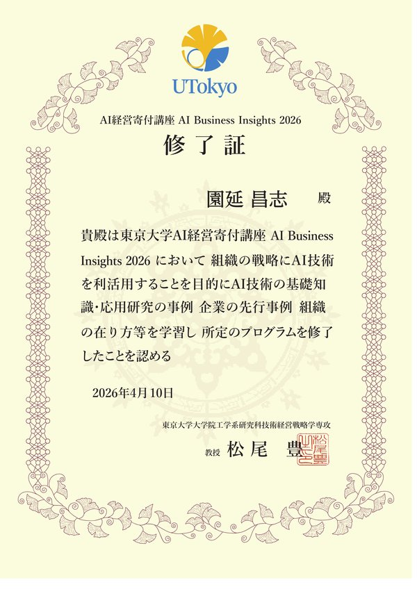

DIRECTOR
Masashi Sonobe
Change Your Smile, Change Your Life.
子どもの頃、私は歯医者が大の苦手でした。虫歯だらけで銀歯も多く、歯並びの悪さもコンプレックス。自分の笑顔に自信が持てなかった。
しかし矯正治療とセラミック審美治療を経験し、笑顔が変わった瞬間、自分のセルフイメージが大きく変わりました。「自分の笑顔が好きになれる」——この経験が、歯科医師としての私の原点です。
歯科医療は「虫歯を治す」だけの仕事ではありません。笑顔の可能性を最大限に引き出し、その人の人生を豊かにする仕事です。だからこそ「家族にできる歯科医療」を合言葉に、一人ひとりに寄り添った治療を提供しています。
資格：歯科医師国家資格（新潟大学卒）、MBA（グロービス経営大学院修士）、DCM（デジタルハリウッド大学院修士）、ワークショップデザイナー（青山学院大学）、ORSC（システムコーチング）、TLC（リーダーシップサークル）、AI Business Insights（東京大学松尾研究室）

MBTI：INTJ（建築家）
Strength Finder：学習欲、最上志向、内省、信念、活発性
趣味：読書・旅行・書道・Wind Foil
社員の幸せ、患者さまの幸せ、そして社会の幸せ。この3つを同時にまたはこの順番で実現することが、私たちの使命です。
患者さまのためにスタッフが犠牲になるのではなく、スタッフが幸せだからこそ最高の医療を提供できる。そして最高の医療を提供するからこそ、患者さまの幸せが生まれる。この好循環を仕組みで支えることが、経営者としての私の役割です。
前野 隆司 先生（武蔵野大学 ウェルビーイング学部 学部長・教授）との対談

対談動画
Voicy（音声配信）
私は、コロナで売上が半分になった時に、「このまま倒産するかもしれない。どうせ倒産するなら本当にやりたい医療をやろう」と覚悟を決めて「家族にできる予防医療」を実践しています。
経営者の自分自身も、スタッフもWell-beingな状態でいることでしか、「家族にできる予防医療」は持続可能にはなりません。
そして、このようなキレイゴトは、簡単ではないし、とても厳しく勇気の試される選択です。
しかし、このようなキレイゴトを、何かのご縁でビジョンを共有できるチームメンバーがいるから、諦めないで、誇り高き医療人として毎日を充実して生きれているのだと思います。
将来、自分の子供に誇りを持って伝えられる。将来そんな職場で働きたいと子供に言ってもらえる。そういう職場を共に創りませんか？
誰かをしあわせにすることで
自分もしあわせにしたい人を
ここで待っている。
医療法人社団SDC 理事長
Well-Being Dental Clinic 院長
園延 昌志
（人生の幸福度の変化）
歯冠長延長術＋マウスピース矯正
マイクロエンド、精密修復治療
コミュニティ＋ゲーミフィケーション
結果的に自費率95%